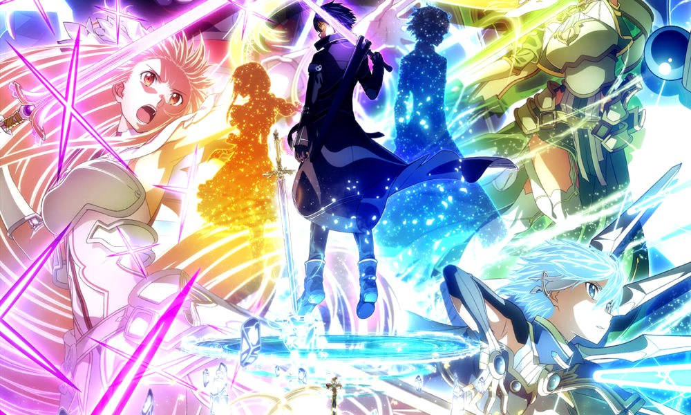
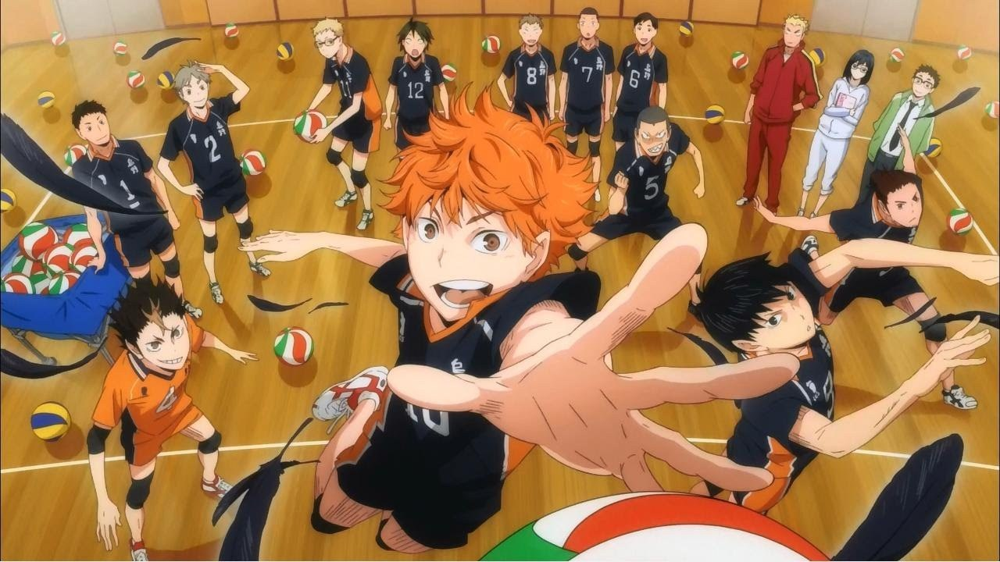

Sword Art Online: Alicization

Digimon Adventure

Sudo Kaname acepta la invitación de un juego de móviles llamado Darwin's Game que resulta ser mucho más macabro de lo que se imaginaba.

Mira y Ao son estudiantes que participan en diversas actividades astronómicas y geológicas con la esperanza de algún día descubrir un asteroide.

En un universo post-apocalíptico dominado por los llamados "números", cada humano tiene su identidad marcada por un conteo que está ligado a su vida.
La película esta ambientada cinco años después de la serie de Digimon Adventure tri. Teniendo lugar en el año 2010.
Hinata Shouyo es un entusiasta del voleibol que en su último año de primaria decide ganar el campeonato junto a sus compañeros.
En la escuela Kamome, se dice que hay un espíritu dentro del baño del antiguo edificio que puede cumplir un deseo si lo invocas.